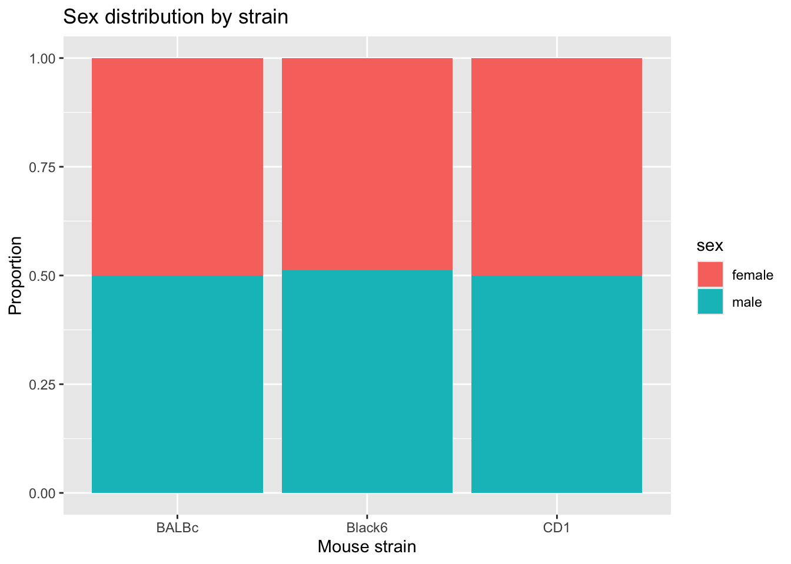
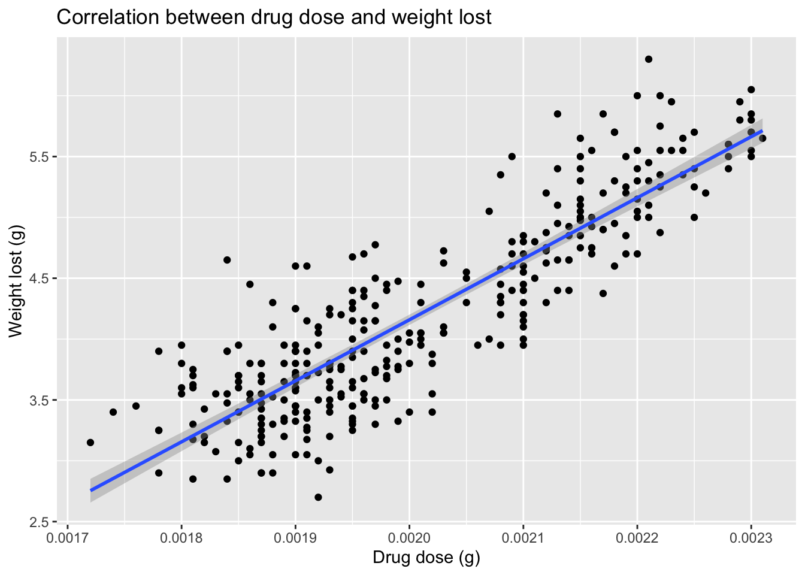
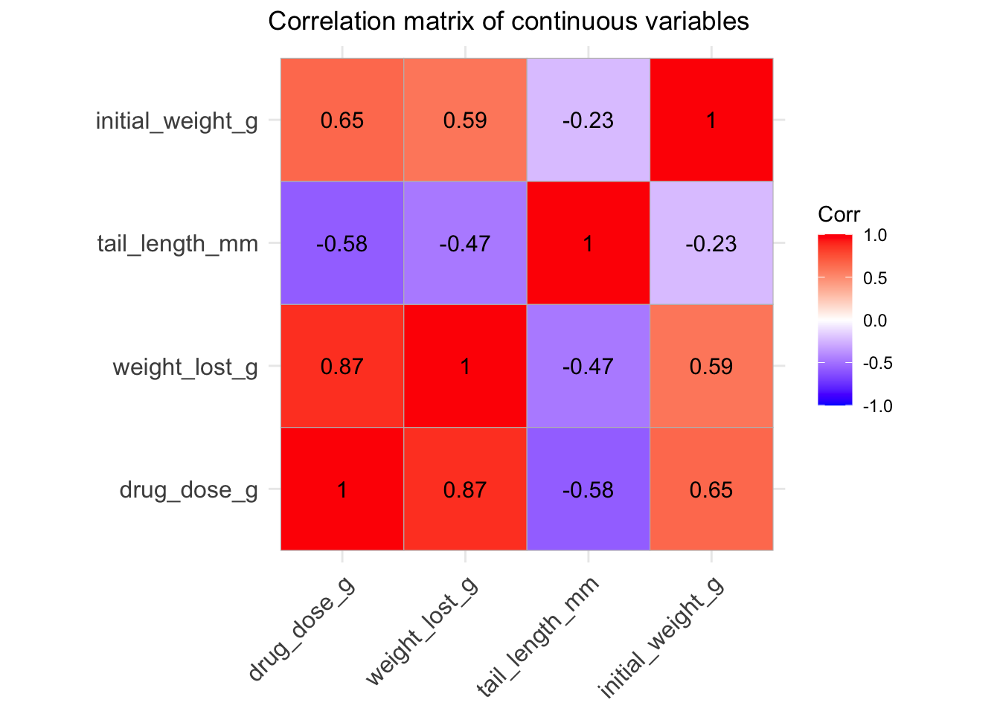
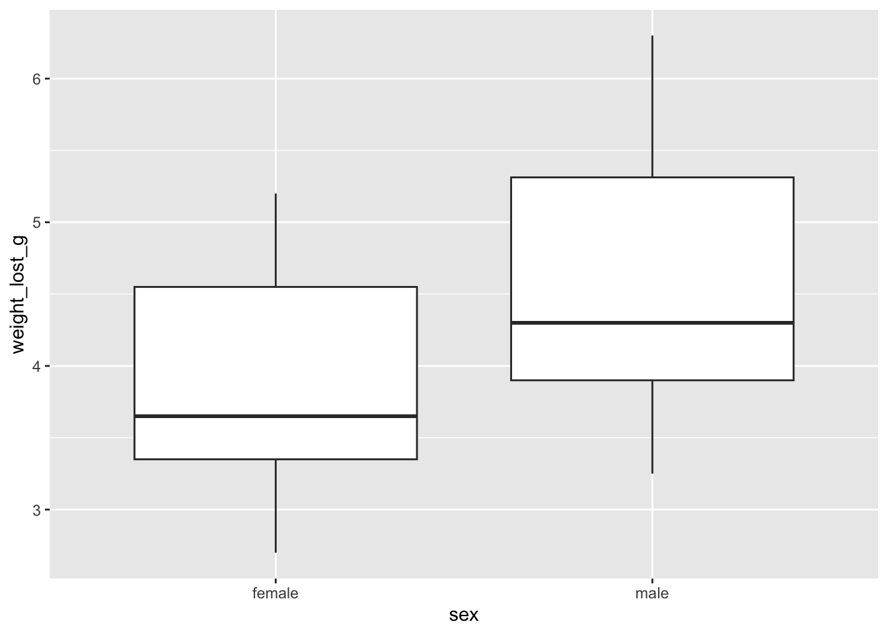
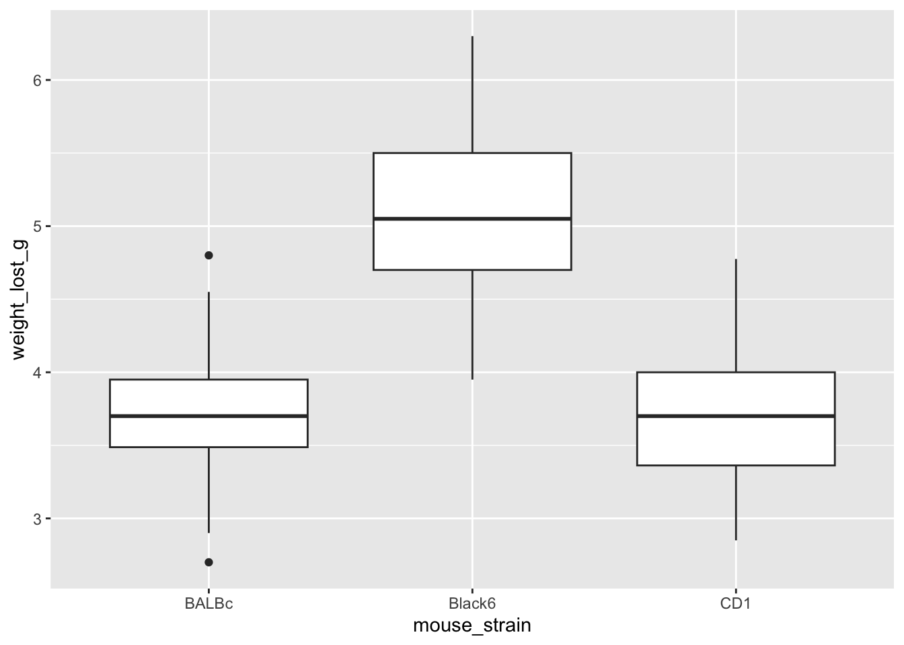
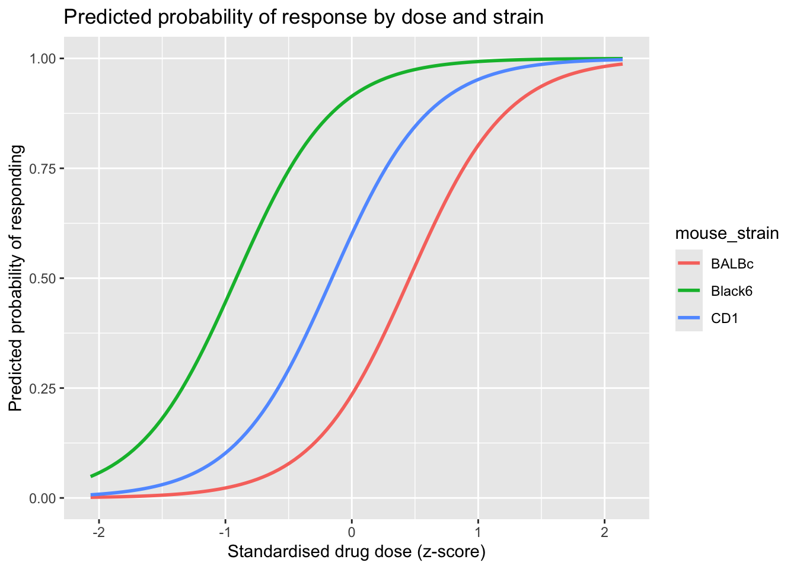

At the end of this session, learners should be able to:
Apply a simple linear regression to model the relationship between two continuous variables and evaluate the significance of a model
Demonstrate how simple linear regression with a categorical independent variable is equivalent to an independent t-test
Construct a multiple linear regression model to account for additional sources of variability in a biological dataset
Test for an association between two categorical variables using a chi-squared test
Extend linear modelling to a binary (yes/no) outcome using logistic regression, and interpret coefficients as odds ratios
Testing associations between categorical variables
So far we have talked about testing relationships where at least one variable is continuous. Sometimes both variables of interest are categorical.
For example: were mice of different strains randomly allocated to the two sexes in the mousezempic study, or is there a systematic association between strain and sex?
The chi-squared (χ²) test of independence compares the observed frequency of every combination of two categorical variables against the frequency we would expect if the two variables were completely unrelated (independent).
Null hypothesis (H0): the two categorical variables are independent (no association)
Alternate hypothesis (HA): the two categorical variables are associated
Read and prepare the data
For this section we’ll read in the raw mousezempic dosage data directly, so that we can inspect the categorical study design variables (mouse_strain, sex) that were summarised away in the joined dataset used above.
library(tidyverse)library(tidyrstats)library(patchwork)dosage <-read_delim("data/mousezempic_dosage_data.csv") %>%# data processing/wrangling # removing spaces and dashes to be computer-friendlymutate(mouse_strain =case_when( mouse_strain =="CD-1"~"CD1", mouse_strain =="Black 6"~"Black6", mouse_strain =="BALB C"~"BALBc",TRUE~ mouse_strain ) ) %>%# remove NA values na.omit(mouse_strain, sex)dosage
It’s often useful to visualise a contingency table as a stacked bar chart before running any test:
dosage %>%ggplot(aes(x = mouse_strain, fill = sex)) +geom_bar(position ="fill") +labs(y ="Proportion", x ="Mouse strain", title ="Sex distribution by strain" )

The proportion of male and female mice looks very similar across all three strains, suggesting there may be no association between strain and sex — exactly what we’d expect if mice were randomly allocated to strain regardless of sex.
Check the assumption and run the test
The chi-squared test assumes that expected cell counts are reasonably large — a common rule of thumb is that no more than 20% of cells should have an expected count below 5. As we saw above, when we created the strain_sex_table data frame, all expected counts are comfortably above 5, so the chi-squared approximation is appropriate here. Always check this before interpreting the p value.
The test statistic is very small (X-squared ≈ 0.05) and the p value (≈ 0.98) is far greater than 0.05, so we fail to reject the null hypothesis.
We conclude there is no evidence of an association between mouse strain and sex in this dataset — consistent with sex being allocated at random with respect to strain, as we would hope for a well-designed experiment.
Chi-squared and small samples
When cell counts are small (expected count < 5 in more than 20% of cells), the chi-squared approximation becomes unreliable. fisher.test() computes an exact p value instead and is a safer choice for small or sparse contingency tables, most commonly used for 2x2 tables.
Correlation between continuous variables
Chi-squared tests are useful for two categorical variables, but the dosage data frame also contains several continuous variables, such as drug_dose_g, weight_lost_g, tail_length_mm, and initial_weight_g. To measure the strength and direction of a linear relationship between two continuous variables, we calculate a correlation coefficient.
A correlation coefficient ranges from -1 to 1:
Values close to 1 indicate a strong positive relationship (as one variable increases, so does the other)
Values close to -1 indicate a strong negative relationship (as one variable increases, the other decreases)
Values close to 0 indicate little to no linear relationship
Calculate a correlation coefficient
Let’s test whether drug_dose_g and weight_lost_g are correlated, using cor.test():
Pearson's product-moment correlation
data: dosage$drug_dose_g and dosage$weight_lost_g
t = 32.562, df = 331, p-value < 2.2e-16
alternative hypothesis: true correlation is not equal to 0
95 percent confidence interval:
0.8447622 0.8963550
sample estimates:
cor
0.8729789
The correlation coefficient (r ≈ 0.87) is close to 1, and the p value is far smaller than 0.05, so we have strong evidence of a positive linear relationship between drug dose and weight lost — mice given a higher dose tended to lose more weight.
Visualise the correlation
It’s good practice to visualise a correlation alongside the test statistic, both to check that a straight line is a sensible summary of the relationship and to communicate the result:
ggplot(dosage, aes(x = drug_dose_g, y = weight_lost_g)) +geom_point() +geom_smooth(method ="lm") +labs(x ="Drug dose (g)",y ="Weight lost (g)",title ="Correlation between drug dose and weight lost" )
`geom_smooth()` using formula = 'y ~ x'

We can also examine the correlation between every pair of continuous variables at once, and visualise the resulting correlation matrix as a heatmap:
library(ggcorrplot)dosage %>%# select the columns of interest# these columns should be numeric select(drug_dose_g, weight_lost_g, tail_length_mm, initial_weight_g) %>%# calculate the correlation between these variables# it does this in a pairwise mannercor() %>%# visualise the correlation ggcorrplot(# default is lab = FALSE, # lab = TRUE adds the correlation coefficient to the plotlab =TRUE, # create your titletitle ="Correlation matrix of continuous variables" )
Warning: `aes_string()` was deprecated in ggplot2 3.0.0.
ℹ Please use tidy evaluation idioms with `aes()`.
ℹ See also `vignette("ggplot2-in-packages")` for more information.
ℹ The deprecated feature was likely used in the ggcorrplot package.
Please report the issue at <https://github.com/kassambara/ggcorrplot/issues>.

Pearson vs Spearman correlation
cor.test() calculates a Pearson correlation by default, which assumes a linear relationship between two continuous, roughly normally distributed variables.
If your data are not normally distributed, contain outliers, or the relationship is monotonic but not linear (e.g. curved but always increasing), a Spearman correlation is more appropriate. Spearman correlation works on the ranks of the data rather than the raw values, making it a non-parametric alternative to Pearson correlation.
You can request a Spearman correlation with the method argument:
Warning in cor.test.default(dosage$drug_dose_g, dosage$weight_lost_g, method =
"spearman"): Cannot compute exact p-value with ties
Spearman's rank correlation rho
data: dosage$drug_dose_g and dosage$weight_lost_g
S = 982284, p-value < 2.2e-16
alternative hypothesis: true rho is not equal to 0
sample estimates:
rho
0.8403902
Parametric and non-parametric tests
So far we’ve tested associations between two categorical variables (chi-squared) and between two continuous variables (correlation). Another very common task is testing whether a continuous outcome differs between groups: for example, does weight_lost_g differ between male and female mice, or between mouse strains?
Parametric tests (like the t-test) assume the outcome is approximately normally distributed within each group.
Non-parametric tests (like the Wilcoxon and Kruskal-Wallis tests) make no distributional assumption, instead testing differences in the ranks of the data. They are a safer choice when normality cannot be assumed, at the cost of some statistical power when the data really are normal.
Comparing two groups: the t-test
Let’s test whether weight_lost_g differs between male and female mice. First, visualise the two distributions:
ggplot(dosage, aes(x = sex, y = weight_lost_g)) +geom_boxplot()

Before running a t-test we should check its normality assumption, using a QQ plot for each group:
Both groups show a distinct curve away from the straight reference line, which suggests weight_lost_g is not normally distributed in either group. We can confirm this with a Shapiro-Wilk test (H0: the data are normally distributed), using the shapiro.test() function:
Shapiro-Wilk normality test
data: .
W = 0.91931, p-value = 6.155e-08
Both p values are far below 0.05, so we reject normality in both groups. Strictly speaking, this means a t-test isn’t the ideal choice here, but let’s run one anyway for comparison, then follow up with the non-parametric alternative below:
dosage %>%# format: y ~ x (outcome ~ grouping variable)# we write data = . so that it refers to the dosage dataset t.test(weight_lost_g ~ sex, data = .)
Welch Two Sample t-test
data: weight_lost_g by sex
t = -8.5545, df = 323.9, p-value = 4.794e-16
alternative hypothesis: true difference in means between group female and group male is not equal to 0
95 percent confidence interval:
-0.8405783 -0.5262453
sample estimates:
mean in group female mean in group male
3.862273 4.545685
When assumptions are violated: the Wilcoxon rank-sum test
The Wilcoxon rank-sum test (also called the Mann-Whitney U test) is the non-parametric equivalent of the independent-samples t-test. Instead of comparing means, it tests whether one group tends to have systematically higher or lower ranked values than the other:
dosage %>%# format: y ~ x (outcome ~ grouping variable)# we write data = . so that it refers to the dosage dataset wilcox.test(weight_lost_g ~ sex, data = .)
Wilcoxon rank sum test with continuity correction
data: weight_lost_g by sex
W = 6874.5, p-value = 1.813e-15
alternative hypothesis: true location shift is not equal to 0
The p value is again far smaller than 0.05, so both tests agree here: male and female mice differ in weight lost.
This won’t always be the case. When a parametric assumption is badly violated, the t-test and its non-parametric counterpart can disagree, which is exactly why checking assumptions matters.
Parametric vs non-parametric tests
Parametric tests (t-test, ANOVA, Pearson correlation) tend to have more statistical power when their assumptions hold, because they make full use of the numeric values rather than just their ranks.
Non-parametric tests (Wilcoxon, Kruskal-Wallis, Spearman correlation) are more robust to outliers and skewed distributions, but can be less powerful to detect a true effect when the data actually are well-behaved.
As a rule of thumb: check the assumption first (e.g. with a QQ plot or Shapiro-Wilk test), and only fall back to the non-parametric alternative when it’s clearly violated.
Comparing more than two groups: the Kruskal-Wallis test
The Wilcoxon test only compares two groups. To compare weight_lost_g across all three mouse strains at once, we need its multi-group extension, the Kruskal-Wallis test — the non-parametric analogue of a one-way ANOVA:
ggplot(dosage, aes(x = mouse_strain, y = weight_lost_g)) +geom_boxplot()

dosage %>%# format: y ~ x (outcome ~ grouping variable)# we write data = . so that it refers to the dosage dataset kruskal.test(weight_lost_g ~ mouse_strain, data = .)
Kruskal-Wallis rank sum test
data: weight_lost_g by mouse_strain
Kruskal-Wallis chi-squared = 212.09, df = 2, p-value < 2.2e-16
The p value is extremely small, so we conclude that weight_lost_g differs between at least one pair of strains — Black6 mice visibly lose more weight than BALBc or CD1 mice in the boxplot above.
Which pair of groups differs?
A significant Kruskal-Wallis (or ANOVA) result only tells us that some group differs from another — it doesn’t say which pair. Answering that requires a follow-up post-hoc pairwise test (e.g. pairwise Wilcoxon tests with a multiple-comparison correction), which is beyond the scope of this section but worth knowing exists.
Linear modelling in the tidyverse
Linear models are very useful for testing for significant associations between variables, or significant differences between groups.
They have the advantage of being able to correct for the effects of other variables, and thereby remove unwanted sources of variation that could otherwise reduce our ability to discover true relationships.
Linear modeling is essentially a two-step process: fitting a straight line through the data (making a linear model of the relationship between x and y), and then testing whether the slope of that line is ‘greater than would be expected by chance’ via a hypothesis test.
In practice the slope and variance around the fitted line, and the p value for the hypothesis test, are estimated using a single function and reported in the same summary table.
In the R tidyverse, plotting data is a central part of exploratory data analysis, with ggplot2 as the foundational package.
We’ll continue using the dosage data frame prepared earlier in this chapter, which lets us directly compare each linear model below against the hypothesis tests we’ve already run.
Testing differences between groups (discrete x)
Above, we used an independent t-test to check whether weight_lost_g differs between male and female mice. A simple linear regression with a single, two-level categorical predictor is mathematically identical to that t-test.
The lm_test() function from tidyrstats fits lm() and tidies the result with broom::tidy() in one step, using the exact same data format required for ggplot:
dosage %>%# format: y ~ x (outcome ~ grouping variable)lm_test(weight_lost_g ~ sex)
Compare the statistic and p.value for sexmale to the t-test we ran earlier (t = -8.54, p = 4.9e-16, using var.equal = TRUE) — they match exactly. The intercept term is the mean for the reference group (female, since it comes first alphabetically), and sexmale is the estimated difference between the male and female group means.
Simple linear regression ≡ t-test
For a two-group comparison, lm(y ~ group) and t.test(y ~ group, var.equal = TRUE) return the same t-statistic and p value. This is why an independent t-test is sometimes described as ‘a linear model with a single binary predictor’ — they are the same underlying method, expressed two different ways.
Testing differences relative to 0 (discrete x)
If we use lm_test(weight_lost_g ~ 0 + sex) we get the mean weight lost per group as the estimate, and each group mean is tested against 0 rather than against the other group:
Both p values are wildly significant (because average weight lost is nowhere near 0 g in either group). However, we cannot conclude from this model alone whether male and female mice differ from each other — that comparison is exactly what the weight_lost_g ~ sex model above already answered.
Testing associations between variables (continuous x)
lm_test() works just as well for a continuous predictor. Earlier we used cor.test() to test the association between drug_dose_g and weight_lost_g (see the scatter plot with fitted line above); a simple linear regression tests the same relationship, while additionally estimating a slope and intercept:
dosage %>%lm_test(weight_lost_g ~ drug_dose_g)
Results for linear model: weight_lost_g ~ drug_dose_g
The p value matches the significance we saw from cor.test(), and the (very large) slope tells us that weight lost increases steeply with drug dose — recall drug_dose_g is measured in tiny fractions of a gram, so a one-unit increase in dose is an enormous increase in practice.
Correcting for covariates
Thus far we have tested relationships between a single covariate and a response (y) variable.
Often we want to ensure that other possible sources of variation are minimised so that we can better detect true differences in our ‘main effect of interest’. Say we want to understand whether drug dose affects weight lost regardless of mouse strain — that is, we want to subtract the mean effect of any strain-specific differences.
We already saw, in the Kruskal-Wallis boxplot above, that weight_lost_g differs noticeably between strains (Black6 mice lose more weight on average). It’s worth checking whether strains also differ in the doses they received:
Black6 mice received a slightly higher mean dose and lost more weight on average than the other two strains — so mouse strain is a plausible confounder of the drug dose/weight lost relationship. To test the dose effect while correcting for strain, we add mouse_strain to the model:
The estimated slope for drug_dose_g drops from about 5015 (t ≈ 32.6) in the uncorrected model above, to about 4061 (t ≈ 13.2) once we adjust for strain — some of the raw dose/weight-lost association was indeed attributable to strain differences. Even so, the p value for drug_dose_g remains far below 0.05, so drug dose has a genuine effect on weight lost that is only partly explained by strain.
Marginal vs Conditional effects
The estimate (slope) for a simple linear model with a single x variable is called the ‘marginal effect’.
The estimates for a multiple linear regression model (where the effect of each covariate is calculated after setting the mean effect of all other covariates to 0) are called ‘conditional effects’.
In order to create a scatter plot that displays the weight lost ~ drug dose relationship corrected for mouse strain, we would have to subtract the average effect of mouse strain on weight lost from each data point, depending on the strain of that animal.
This is called ‘conditioning’ or ‘residualisation’ and is beyond the scope of this course. Just be aware that a multiple linear regression model that finds very low p values for a main effect of interest, may be difficult to show graphically without ‘residualising the data’.
Logistic regression
Every model we have fitted so far has had a continuous outcome (y), such as weight lost. But often in biology the outcome we care about is binary — did a patient respond to treatment or not, did a tumour recur or not, did a mouse survive or not?
A straight line is a poor model for a binary outcome, because it can predict probabilities below 0 or above 1. Logistic regression solves this by modelling the log-odds of the outcome as a linear function of the predictors:
where \(p\) is the probability of the outcome occurring. This keeps the right-hand side of the equation looking just like a linear model, while guaranteeing that the predicted probability \(p\) stays between 0 and 1.
Null hypothesis (H0): the predictor has no relationship with the log-odds of the outcome (\(\hat\beta_1 = 0\))
Alternate hypothesis (HA): the predictor is associated with the log-odds of the outcome (\(\hat\beta_1 \neq 0\))
Create a binary outcome
The mousezempic dosage data doesn’t come with a binary outcome built in, so let’s create one: we’ll define a mouse as a “responder” if it lost more weight than the median mouse in the study, and a “non-responder” otherwise.
We’ll also rescale drug_dose_g (originally measured in tiny fractions of a gram) into a standardised z-score, so that the resulting odds ratio has a sensible interpretation (“per 1 standard deviation increase in dose”) rather than an astronomically large number per 1 g increase.
# A tibble: 2 × 2
responder n
<dbl> <int>
1 0 172
2 1 161
Check model assumptions
Logistic regression shares the independence and linearity assumptions of linear regression (here, linearity applies to the log-odds rather than the raw outcome), but does not assume normally distributed or homoscedastic residuals, since the outcome is binary rather than continuous.
We should also check for separation — where a predictor perfectly separates responders from non-responders, which would make the model unstable. A quick cross-tabulation is one way to eye-check this:
table(dosage$mouse_strain, dosage$responder)
0 1
BALBc 57 11
Black6 1 118
CD1 114 32
Every strain contains a mix of responders and non-responders, so separation isn’t a concern here.
Fit the logistic regression model
Does drug dose predict the probability of responding, after accounting for mouse strain?
Call:
glm(formula = responder ~ drug_dose_z + mouse_strain, family = "binomial",
data = dosage)
Coefficients:
Estimate Std. Error z value Pr(>|z|)
(Intercept) -1.1809 0.3672 -3.216 0.00130 **
drug_dose_z 2.5818 0.4838 5.337 9.45e-08 ***
mouse_strainBlack6 3.5436 1.1410 3.106 0.00190 **
mouse_strainCD1 1.5870 0.4962 3.198 0.00138 **
---
Signif. codes: 0 '***' 0.001 '**' 0.01 '*' 0.05 '.' 0.1 ' ' 1
(Dispersion parameter for binomial family taken to be 1)
Null deviance: 461.27 on 332 degrees of freedom
Residual deviance: 186.49 on 329 degrees of freedom
AIC: 194.49
Number of Fisher Scoring iterations: 7
Interpret coefficients as odds ratios
The raw coefficients from summary() are on the log-odds scale, which isn’t very intuitive. Exponentiating them converts each coefficient into an odds ratio (OR) — the multiplicative change in the odds of responding associated with a one-unit increase in that predictor (with all other predictors held constant).
Both drug_dose_z and mouse_strain have p values well below 0.05, so we reject the null hypothesis for each: a one standard deviation increase in dose is associated with roughly a 13-fold increase in the odds of responding (95% CI approximately 5- to 36-fold), holding strain constant. Relative to the BALBc reference strain, Black6 and CD1 mice both have substantially higher odds of responding at the same dose.
Visualise the fitted model
Unlike a straight line, the fitted relationship between a continuous predictor and a binary outcome is an S-shaped (‘sigmoid’) curve representing predicted probability:
pred_grid <-expand_grid(drug_dose_z =seq(min(dosage$drug_dose_z), max(dosage$drug_dose_z), length.out =100),mouse_strain =unique(dosage$mouse_strain))pred_grid <- pred_grid %>%mutate(predicted_prob =predict(logit_model, newdata = pred_grid, type ="response"))pred_grid %>%ggplot(aes(x = drug_dose_z, y = predicted_prob, colour = mouse_strain)) +geom_line(linewidth =1) +labs(y ="Predicted probability of responding",x ="Standardised drug dose (z-score)",title ="Predicted probability of response by dose and strain" )

Linear regression vs logistic regression
Logistic regression is the natural extension of everything we’ve covered in this chapter to a binary outcome: we still specify a formula of the form outcome ~ predictors, still get a coefficient and p value per predictor, and can still add covariates to control for confounders. The two things that change are the scale the coefficients are estimated on (log-odds rather than raw units) and the assumptions checked (no normality/homoscedasticity of residuals required).
Linear modelling in bioinformatics
The examples above illustrate a method of testing for associations in data using linear models, which works seamlessly with the same data formats required for ggplot.
The linear models used in bioinformatics research are no different in principal to those we have used above, however there are several computational and ‘biotechnical’ challenges that arise in bioinformatics analysis when using linear modeling.
Firstly, its not uncommon to handle hundreds of thousands to millions of datapoints in a large bioinformatics analysis. Differential expression analysis (of RNA protein or metabolite abundance), we will usually involve testing for treatment effects in 1000s of outcomes (e.g. individual genes), whilst correcting for multiple covariates, including batch effects.
This is a computationally expensive exercise that has been extensively optimized using matrix algebra in the Bioconductor packages developed at WEHI such as limma and edgeR, that we will learn about in upcoming workshops!
Secondly, the raw data distribution of biomolecular data is rarely normal, and requires extensive filtering, transformation, and measures to control ‘mean-variance’ relationships (heteroscedasticity) in the data.
Again, years of research has been invested in optimizing the data cleaning and normalization processes, and adapting linear modelling methods to sensitively detect true biological differences whilst minimizing false positives.
Lastly, to manage the computational and technical demands of linear modeling at scale, Bioconductor packages use specialized data ‘containers’ that hold expression data, sample and gene metadata, and linear model ‘designs’ together in a consistent format.
This supports a workflow that, unlike the interactive plotting/modelling workflow we have used to date in tidyverse, first loads all the required data and modelling parameters into a ‘container’, before fitting all of the models and generating thousands of results with a single command.
Machine learning
Machine learning is an umbrella term for the use of statistics to ‘learn’ from features of a training dataset and then make predictions about a new dataset.
Making such predictions is a small additional step from the linear modelling methods we introduced above.
The covariate effects (aka ‘coefficients’ or ‘betas’) output in a linear model summary table, can be combined with the predict() function to predict the outcome of a new dataset. In other words, we could use predict() to solve the equation that will give us the expected gene expression (y) for a new mouse according to the drug dosage and strain of that individual.
Machine learning is a huge field with many different algorithms that can learn relationships between features in training data.
The key difference between machine learning and the linear model-based hypothesis testing we introduced above, is that the former is primarily concerned with making accurate predictions about new data, whereas the latter is interested in understanding relationships between variables.
We will learn more about machine learning in our final workshop.